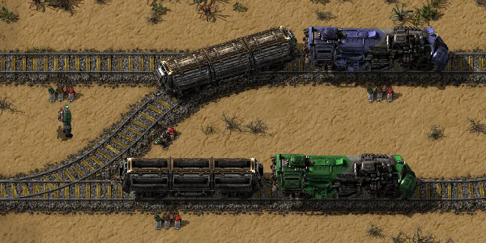

Transport
W Factorio występują 4 rodzaje transportu przedmiotów oraz graczy.
Taśmociągi

Pojazdy

Pociągi

Drony

W labolatoriach odblokować można nowe sposoby transportu.
Pojazdy i pociągi wymagają silników, a drony silniczków i baterii.
Pojazdy i pociągi wymagają silników, a drony silniczków i baterii.

W Factorio taśmociągi są głównym transportem
dla przedmiotów w fabryce. To dzięki nim surowce
poruszają się między maszynami.
Dostępne są 3 rodzaje taśmociągów. Taśmociągi różnią się prędkością z jaką poruszają się po nich przedmioty oraz długością pasów podziemnych.
Każdy następny rodzaj można odblokować za pomocą badań.
Każdy taśmociąg ma swoją podziemną odmianę oraz sortownik.
Taśmociąg składa się z dwóch pasów transmisyjnych, na których
Dostępne są 3 rodzaje taśmociągów. Taśmociągi różnią się prędkością z jaką poruszają się po nich przedmioty oraz długością pasów podziemnych.
Każdy następny rodzaj można odblokować za pomocą badań.
Każdy taśmociąg ma swoją podziemną odmianę oraz sortownik.
Taśmociąg składa się z dwóch pasów transmisyjnych, na których
Pojazdy lądowe dostępne są wraz z rozwojem fabryki.
Auta są szybkim sposobem na poruszanie się między fabrykami, mogą obronić cię przed małą grupką robaków oraz transportować niewiele przedmiotów.
Czołgi są wolniejszym sposobem na przemieszczanie się, jednak mogą rozjeżdżać wrogie obozy oraz rozprawiać się z wieloma przeciwnikami na raz.
Obrażenia i efekt zadany przez broń zamontowaną na dachu jest zależna od amunicji oraz postępu badań w labolatorium.
Auta są szybkim sposobem na poruszanie się między fabrykami, mogą obronić cię przed małą grupką robaków oraz transportować niewiele przedmiotów.
Czołgi są wolniejszym sposobem na przemieszczanie się, jednak mogą rozjeżdżać wrogie obozy oraz rozprawiać się z wieloma przeciwnikami na raz.
Obrażenia i efekt zadany przez broń zamontowaną na dachu jest zależna od amunicji oraz postępu badań w labolatorium.
Kolej dostępna jest w względnie wczesnym stadium
rozwoju fabryki. Pozwala na transport przedmiotów
i płynów oraz na obronę przed przeciwnikami.
Wraz z odkryciem nowych technologi, można robić coraz to bardziej zautomatyzowane systemy.
Wagony towarowe mogą przenieść do 40 staków przedmiotów (40*100)
natomiast cysterny przetrzymają 25 tysięcy litrów.
W kontroli ruchu kolejowego pomagają różne obwody oraz procesory logiczne.
Wraz z odkryciem nowych technologi, można robić coraz to bardziej zautomatyzowane systemy.
Wagony towarowe mogą przenieść do 40 staków przedmiotów (40*100)
natomiast cysterny przetrzymają 25 tysięcy litrów.
W kontroli ruchu kolejowego pomagają różne obwody oraz procesory logiczne.
Drony są dostępne w późniejszym stadium postępu.
Pozwalają one na budowę fabryk, transport i sortowanie przedmiotów oraz na obronę przed przeciwnikami.
Są 3 rodzaje dronów:
- Logistyczne
- Budowlane
- Obronne
Są one w stanie sortować przedmioty, budować według planu oraz bronić gracza.
Pozwalają one na budowę fabryk, transport i sortowanie przedmiotów oraz na obronę przed przeciwnikami.
Są 3 rodzaje dronów:
- Logistyczne
- Budowlane
- Obronne
Są one w stanie sortować przedmioty, budować według planu oraz bronić gracza.